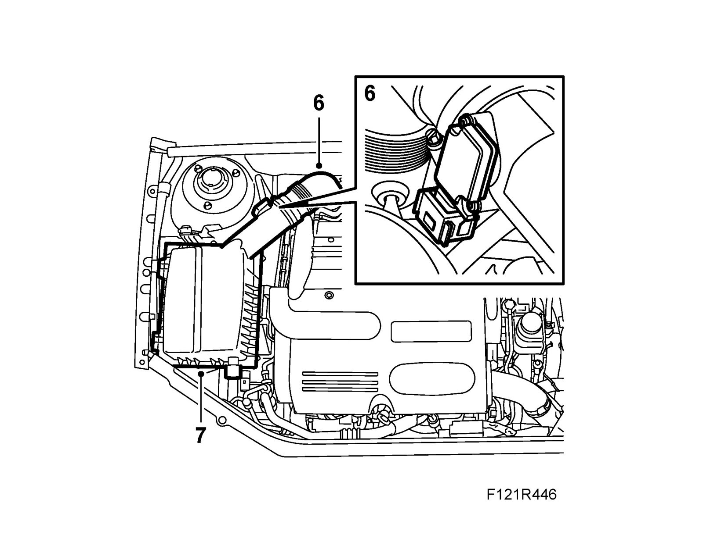
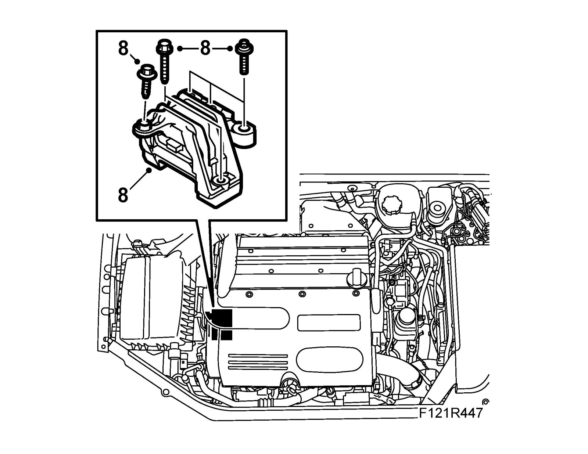
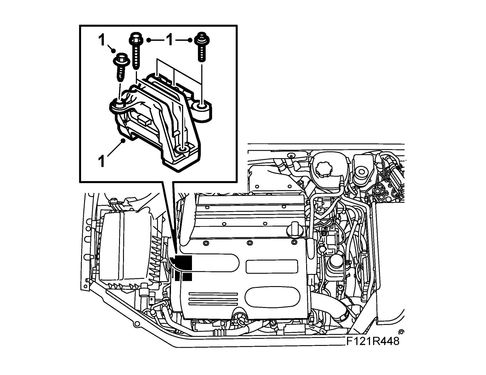
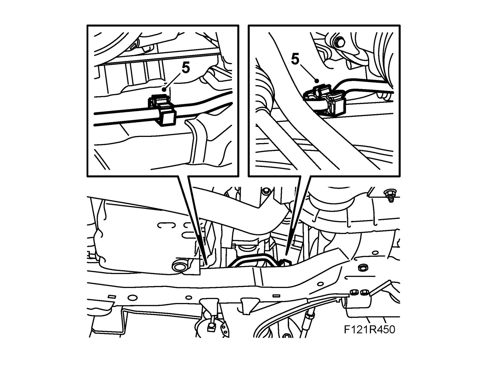

Engine Mounting, Right
Engine mounting, rightTo remove
1. Cover the wings and raise the car.
2. CV: Remove Chassis reinforcement, front subframe, CV, petrol.
3. Open the power steering pipe's clips on the subframe.
4. Fit 83 96 152 Centering kit, engine to the subframe. See also Centering tool, engine and subframe.
5. Lower the car.
6. Remove the turbocharger intake hose, unplug the mass air flow sensor connector.

7. Remove the air cleaner cover and the air cleaner. Detach the inlet hose and remove the air cleaner casing.
8. Remove the engine pad from the body and bracket.

To fit
1. Fit and adjust the engine pad to the body. Tighten the bolts between the engine pad and the bracket. The engine pad and bracket should be aligned with each other.
Important
Engine mountings should not lie against the engine brackets.
Tightening torque, body 40 Nm +60° (30 lbf ft +60°)
Tightening torque, bracket 70 Nm +60° (52 lbf ft +60°)

2. Fit the air filter housing and intake hose. Fit the air filter and filter housing lid.
3. Plug in the mass air flow sensor connector and fit the turbocharger intake hose.
4. Raise the car, remove 83 96 152 Centering kit, engine.
5. Fit the power steering pipe to the subframe.

6. CV: Fit Chassis reinforcement, front subframe, CV, petrol
7. Lower the car and remove the wing protectors.